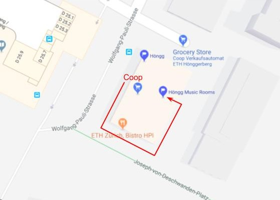

Information about auditions
The audition will be a chance for us to get to know you and vice versa. Not just voice-wise but also on a personal level. The structure will be some talking, then some warm up (if you want to warm up before that's of course great, too), small singing exercises and a solo. Please prepare a song that you feel comfortable singing without any background music or accompaniment. It doesn't have to be particularly difficult or long at all. It's mainly for us to hear what your voice is like. We will then also briefly sing together so please have a look at the first verse (17 bars) of Run to You (original video, sheet music). No need to learn it by heart, it’s perfectly fine if you look at the sheet music.
Some more information about how we work: We are a hobby group and understand that everyone has some commitment outside of The Threads. We do, however, expect that everyone commits to attending the rehearsals except for rare occasions. We have rehearsals every second Monday and every Wednesday at ETH Hönggerberg from 7:30pm to 9:30pm. We are mainly preparing for our next "big" concert in May 2019 with some smaller performances along the way. We will also spend the first weekend of May together as a group in the Swiss mountains.
We hope this information is exciting rather than intimidating ;) Above all we want to have fun singing together and that's what you should be looking for as well!
We are looking forward to meeting you! Don't hesitate to contact us if you have more questions!
Here is a little map to help you find the music rooms at Hönngerberg: Walk around the building of the Coop, enter through the doors in the back and head down the stairs.
